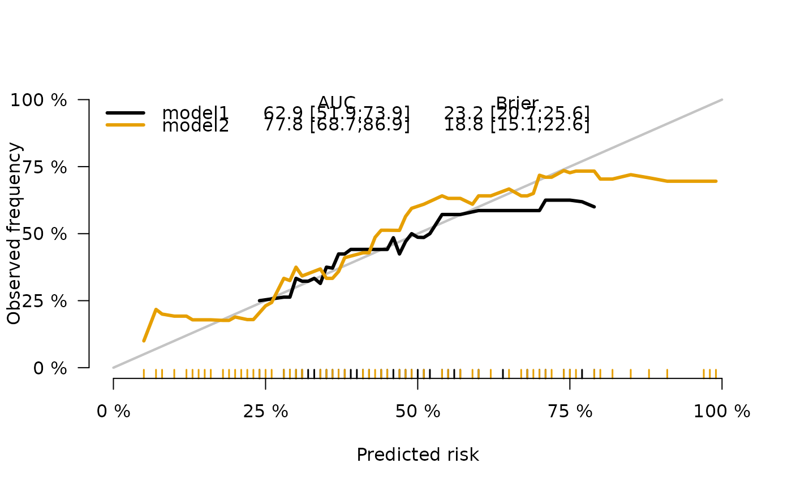
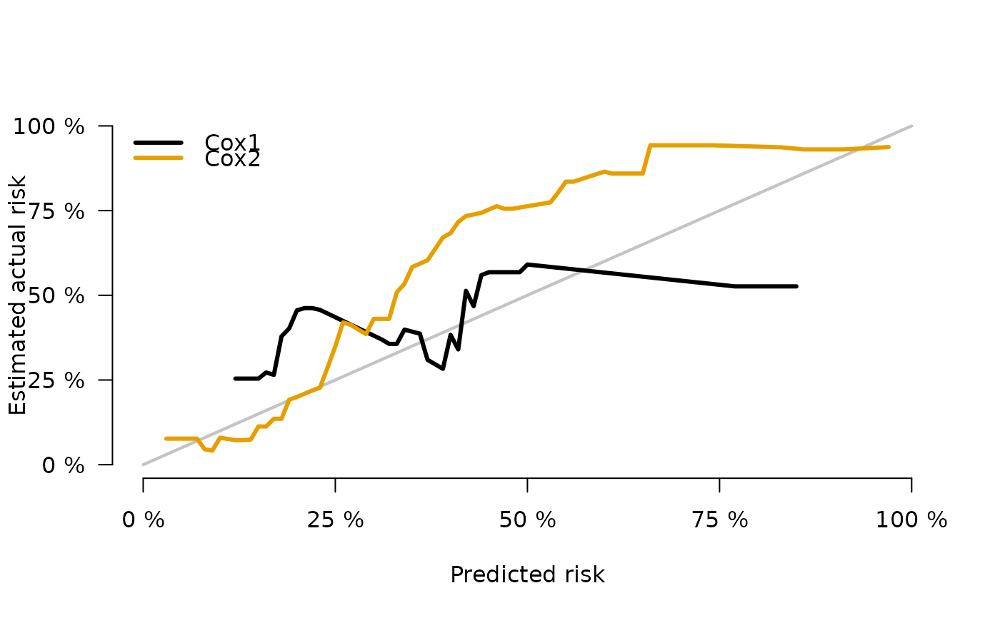
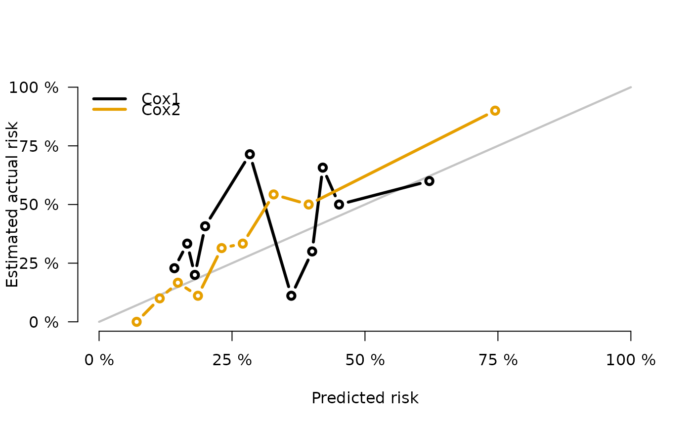

Plot Calibration curves for risk prediction models
Usage
plotCalibration(
x,
models,
times,
method = "nne",
cens.method,
round = TRUE,
bandwidth = NULL,
q = 10,
bars = FALSE,
hanging = FALSE,
names = "quantiles",
pseudo = FALSE,
rug,
show.frequencies = FALSE,
plot = TRUE,
add = FALSE,
diag = !add,
legend = !add,
auc.in.legend,
brier.in.legend,
axes = !add,
xlim = c(0, 1),
ylim = c(0, 1),
xlab = ifelse(bars, "Risk groups", "Predicted risk"),
ylab,
col,
lwd,
lty,
pch,
type,
percent = TRUE,
na.action = na.fail,
cex = 1,
...
)Arguments
- x
Object obtained with function
Score- models
Choice of models to plot
- times
Time point specifying the prediction horizon.
- method
The method for estimating the calibration curve(s):
"quantile"The observed proportion at predicted risk value 'p' is obtained in groups defined by quantiles of the predicted event probabilities of all subjects. The number of groups is controlled by argumentq."nne": The observed proportion at predicted risk value 'p' is obtained based on the subjects whose predicted risk is inside a nearest neighborhood around the value 'p'. The larger the bandwidth the more subjects are included in the current neighborhood.
- cens.method
For right censored data only. How observed proportions are calculated. Either
"jackknife"or"local":"jackknife"Compute a running mean of the jackknife pseudovalues across neighborhoods/groups of the predicted risks. Here we rely on the assumption that censoring is independent of the event time and the covariates, see References."local"Compute the Kaplan-Meier estimator in absence of competing risks and the Aalen-Johansen estimator in presence of competing risks locally like a running mean in neighborhoods of the predicted risks. The widths of the neighborhoods are defined according to method.
- round
If
TRUEpredicted probabilities are rounded to two digits before smoothing. This may have a considerable effect on computing efficiency in large data sets.- bandwidth
The bandwidth for
method="nne"- q
The number of quantiles for
method="quantile"andbars=TRUE.- bars
If
TRUE, use barplots to show calibration.- hanging
Barplots only. If
TRUE, hang bars corresponding to observed frequencies (estimated actual risk) at the value of the corresponding prediction.- names
Barplots only. Names argument passed to
names.argofbarplot.- pseudo
If
TRUEshow pseudo values (only for right censored data).- rug
If
TRUEshow rug plot at the predictions- show.frequencies
Barplots only. If
TRUE, show frequencies above the bars.- plot
If
FALSE, do not plot the results, just return a plottable object.- add
If
TRUEthe line(s) are added to an existing plot.- diag
If
FALSEno diagonal line is drawn.- legend
Logical. If
TRUEdraw legend.- auc.in.legend
Logical. If
TRUEadd AUC to legend.- brier.in.legend
Logical. If
TRUEadd Brier score to legend.- axes
If
FALSEno axes are drawn.- xlim
Limits of x-axis.
- ylim
Limits of y-axis.
- xlab
Label for y-axis.
- ylab
Label for x-axis.
- col
Vector with colors, one for each element of object. Passed to
lines.- lwd
Vector with line widths, one for each element of object. Passed to
lines.- lty
lwd Vector with line style, one for each element of object. Passed to
lines.- pch
Passed to
lines.- type
Passed to
lines.- percent
If TRUE axes labels are multiplied by 100 and thus interpretable on a percent scale.
- na.action
what to do with NA values. Passed to
model.frame- cex
Default cex used for legend and labels.
- ...
Used to control the subroutines: plot, axis, lines, barplot, legend, addtable2plot, points (pseudo values), rug. See
SmartControl.
Details
In uncensored data, the observed frequency of the outcome event is calculated locally at the predicted risk. In right censored data with and without competing risks, the actual risk is calculated using the Kaplan-Meier and the Aalen-Johansen method, respectively, locally at the predicted risk.
Examples
library(prodlim)
# binary
set.seed(10)
db=sampleData(100,outcome="binary")
fb1=glm(Y~X1+X5+X7,data=db,family="binomial")
fb2=glm(Y~X1+X3+X6+X7,data=db,family="binomial")
xb=Score(list(model1=fb1,model2=fb2),Y~1,data=db,
plots="cal")
plotCalibration(xb,brier.in.legend=TRUE)

plotCalibration(xb,bars=TRUE,model="model1")
plotCalibration(xb,models=1,bars=TRUE,names.cex=1.3)
# survival
library(survival)
library(prodlim)
dslearn=sampleData(56,outcome="survival")
dstest=sampleData(100,outcome="survival")
fs1=coxph(Surv(time,event)~X1+X5+X7,data=dslearn,x=1)
fs2=coxph(Surv(time,event)~strata(X1)+X3+X6+X7,data=dslearn,x=1)
xs=Score(list(Cox1=fs1,Cox2=fs2),Surv(time,event)~1,data=dstest,
plots="cal",metrics=NULL)
plotCalibration(xs)
#> The default method for estimating calibration curves based on censored data has changed for riskRegression version 2019-9-8 or higher
#> Set cens.method="jackknife" to get the estimate using pseudo-values.
#> However, note that the option "jackknife" is sensititve to violations of the assumption that the censoring is independent of both the event times and the covariates.
#> Set cens.method="local" to suppress this message.

plotCalibration(xs,cens.method="local",pseudo=1)
plotCalibration(xs,method="quantile")
#> The default method for estimating calibration curves based on censored data has changed for riskRegression version 2019-9-8 or higher
#> Set cens.method="jackknife" to get the estimate using pseudo-values.
#> However, note that the option "jackknife" is sensititve to violations of the assumption that the censoring is independent of both the event times and the covariates.
#> Set cens.method="local" to suppress this message.

# competing risks
if (FALSE) {
data(Melanoma)
f1 <- CSC(Hist(time,status)~age+sex+epicel+ulcer,data=Melanoma)
f2 <- CSC(Hist(time,status)~age+sex+logthick+epicel+ulcer,data=Melanoma)
x <- Score(list(model1=f1,model2=f2),Hist(time,status)~1,data=Melanoma,
cause= 2,times=5*365.25,plots="cal")
plotCalibration(x)
}